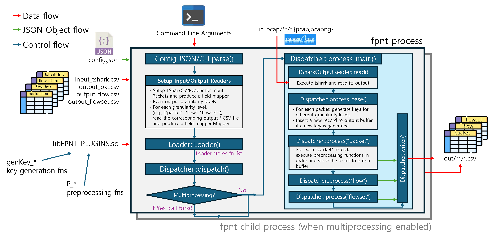

Architecture
Introduction
fpnt is an open-source C++ framework designed to tackle the engineering bottlenecks associated with extracting high-dimensional, multi-granular features from network traffic. While most state-of-the-art preprocessing tools tightly couple their protocol parsing logic with fixed data structures (e.g., standard 5-tuple flows), fpnt fully decouples these concerns. It delegates the complex, ever-evolving task of protocol dissection to tshark (the terminal-based engine of Wireshark) and focuses its core architecture entirely on flexible data aggregation, key generation, and feature preprocessing.
This architectural decoupling enables researchers to rapidly prototype custom traffic granularities (e.g., bidirectional flows, channel flowsets, or physical-layer BFM events) and chain mathematical transformations without modifying the framework's core engine. The entire pipeline is driven by simple CSV schemas and dynamically loaded plugins, effectively reducing the engineering overhead of adding a new feature from hundreds of lines of complex C/C++ code to zero.

the multi-level feature extraction pipeline for packet, flow, and flowset granularities." @section workflow The Core Pipeline Workflow The execution of <tt>fpnt</tt> follows a highly structured, deterministic pipeline designed to process PCAP files iteratively. The overall architecture, as depicted in Figure 1, comprises several key stages: @subsection stage1 Stage 1: Setup and Configuration Parsing When the <tt>fpnt</tt> executable is launched, it first parses the command-line arguments and the <tt>config.json</tt> file. This initialization phase is critical for establishing the data schemas that will be used throughout the execution. 1. <strong>Global Configuration Setup</strong>: The framework reads <tt>config.json</tt> to determine global behaviors, such as whether to enable multiprocessing, how many CPU cores to utilize, and which <tt>tshark</tt> display filters to apply to the input PCAP files. 2. <strong>Reader Initialization</strong>: The framework utilizes <tt>Reader</tt> objects to parse the CSV configuration files (e.g., <tt>input_tshark.csv</tt>, <tt>output_pkt.csv</tt>, <tt>output_flow.csv</tt>). Each CSV defines the fields to be extracted or calculated for a specific granularity level. 3. <strong>Field Mapping and Validation</strong>: For each granularity level specified in the configuration, <tt>fpnt</tt> constructs a <tt>Mapper</tt> object. The <tt>Mapper</tt> validates the requested <tt>tshark</tt> fields against a crawled display filter reference (<tt>dfref</tt>) to ensure compatibility with the installed <tt>tshark</tt> version. It also assigns a unique integer ID to each string field name. This mapping is vital for the v0.40 vectorized storage, as it allows subsequent pipeline stages to look up fields via O(1) array indices rather than O(N) string hashing. 4. <strong>Plugin Loading</strong>: The <tt>Loader</tt> class dynamically loads the shared object file (<tt>libFPNT_PLUGINS.so</tt>) specified in the configuration. It resolves symbols for the key generation functions (<tt>genKey_*</tt>) and preprocessing functions (<tt>P_*</tt> / <tt>P_*_idx</tt>) defined in the CSV schemas. The <tt>Loader</tt> caches these function pointers in internal arrays, eliminating the overhead of <tt>dlsym</tt> lookups during the main processing loop. @subsection stage2 Stage 2: Multiprocessing and Subprocess Dispatch To maximize throughput across large datasets (like the 721 GB DeepCSI dataset), <tt>fpnt</tt> implements highly efficient file-level multiprocessing. 1. <strong>File Discovery</strong>: The main process recursively scans the specified input directory, identifying all valid PCAP and PCAPNG files. 2. <strong>Sorting Strategy</strong>: <tt>fpnt</tt> offers an advanced sorting mechanism to optimize load balancing across CPU cores. By default, files are processed in lexicographical order. However, researchers can enable size-based sorting (descending). By dispatching the largest PCAP files first, <tt>fpnt</tt> ensures that straggler processes (which take a long time to finish) are scheduled early, preventing a scenario where a single core is left processing a massive file while all other cores remain idle. 3. <strong>Forking and Execution</strong>: The main process uses standard Unix <tt>fork()</tt> to spawn independent child processes up to the configured CPU concurrency limit. Because memory spaces are isolated after the fork, <tt>fpnt</tt> completely avoids complex thread synchronization primitives (like mutexes or atomic variables) during the data processing phase. Each child process operates autonomously on a single PCAP file. @subsection stage3 Stage 3: PCAP Decoding via TSharkOutputReader Within each child process, the <tt>Dispatcher::process_main()</tt> function takes over the processing of a single PCAP file. The first step is to extract raw packet features. 1. <strong>Subprocess Execution</strong>: The <tt>TSharkOutputReader</tt> executes <tt>tshark</tt> as a subprocess via standard C-style <tt>popen</tt>. <tt>tshark</tt> is instructed to decode the PCAP and output the selected fields (defined in <tt>input_tshark.csv</tt>) as a Tab-Separated Values (TSV) stream. 2. <strong>High-Speed Buffered Reading</strong>: A critical bottleneck in earlier versions of <tt>fpnt</tt> was the overhead of reading the TSV output. To resolve this, the v0.40 update introduced a highly optimized reading mechanism. The TSV stream is read directly into a large, 1MB statically allocated memory buffer using <tt>fread</tt>. 3. <strong>Newline Scanning via <tt>memchr</tt></strong>: Instead of relying on slow C++ <tt>std::getline</tt> or <tt>pstreams</tt>, the reader utilizes hardware-accelerated <tt>memchr</tt> to rapidly scan the 1MB buffer for newline characters (<tt>\\n</tt>). 4. <strong>Tokenization</strong>: Once a line is isolated, it is tokenized by tab characters (<tt>\\t</tt>) and converted directly into the internal vectorized format. This raw C-style parsing ensures that <tt>fpnt</tt> can consume <tt>tshark</tt>'s output at speeds approaching the maximum sequential read limit of the underlying NVMe SSD. @subsection stage4 Stage 4: Key Generation and Data Structuring As each packet's features are parsed from the TSV stream, the <tt>Dispatcher</tt> must organize the data hierarchically. 1. <strong>Packet Record Creation</strong>: A baseline packet-level record is immediately appended to the <tt>Dispatcher</tt>'s internal <tt>std::vector</tt> storage. This record acts as the foundational data source for all subsequent processing. 2. <strong>Key Resolution (<tt>Dispatcher::process_base()</tt>)</strong>: The <tt>Dispatcher</tt> sequentially invokes the configured <tt>genKey_*</tt> functions for higher granularity levels. For instance, if the configuration specifies a <tt>flow</tt> granularity, the packet's data is passed to the flow key generator (e.g., <tt>genKey_flow_default</tt>). The generator returns a unique string identifier, typically a 5-tuple (Source IP, Destination IP, Source Port, Destination Port, Protocol). 3. <strong>Hierarchical Linkage</strong>: The <tt>Dispatcher</tt> checks if a record with the generated key already exists. If not, a new, empty record is created for that granularity level. Crucially, the packet's internal integer index is then appended to the higher-level record's list of child indices (<tt>std::vector\<size_t\> child_idxs</tt>). This strict hierarchical linkage (Packet -> Flow -> Flowset) allows <tt>fpnt</tt> to quickly retrieve all packets belonging to a specific flow during the preprocessing stage without performing expensive search operations. @subsection stage5 Stage 5: Iterative Preprocessing Once the entire PCAP file has been read, decoded, and structurally linked in memory, the actual feature engineering phase begins. 1. <strong>Bottom-Up Execution Strategy</strong>: The <tt>Dispatcher::process()</tt> function is invoked for each granularity level in ascending order (Packet -> Flow -> Flowset). This guarantees that lower-level features (e.g., packet direction) are fully calculated before higher-level aggregations (e.g., total flow bytes) attempt to read them. 2. <strong>Function Dispatch Loop</strong>: For every record in a given granularity level, the <tt>Dispatcher</tt> iterates through the list of preprocessing functions defined in the corresponding CSV schema. 3. <strong>In-Place Mutation via <tt>P_*_idx</tt> API</strong>: Using the v0.40 Index-based API, the dynamically loaded plugins access the record's data. Because all field names were resolved to integer indices during the Setup Stage, the plugins perform O(1) direct array accesses. For example, a <tt>P_childsum_ll_idx</tt> plugin will iterate over the record's <tt>child_idxs</tt>, access each child packet directly via its index, extract the <tt>frame.len</tt> value, sum the integers, and write the final result back into the current record's target field index. @subsection stage6 Stage 6: Exporting After all preprocessing is complete for all configured granularity levels, the output phase begins. 1. <strong>Formatting</strong>: The <tt>writer()</tt> function iterates through the internal <tt>std::vector</tt> storage. It converts the internal data representation back into comma-separated strings according to the schema. 2. <strong>I/O Operations</strong>: The formatted strings are written to the specified output directory. If the original PCAP file was located in a nested subdirectory, <tt>fpnt</tt> reconstructs that relative path structure in the output directory, ensuring that researchers can easily map output CSV files back to their source PCAPs. @section v040_arch What's New in v0.40: Architectural Optimizations The v0.40 release of <tt>fpnt</tt> introduced fundamental architectural shifts to address memory overhead and processing latency, significantly differentiating it from its conceptual origins. These updates were necessary to process massive datasets like the 721 GB DeepCSI corpus efficiently. @subsection v040_vectorized Vectorized Internal Storage In earlier versions, the <tt>Dispatcher</tt> relied heavily on C++ Standard Template Library hash tables (<tt>std::unordered_map</tt>) to store records, using string keys (like "frame.len") for lookups. While this dynamic schema approach was extremely flexible for rapid prototyping, it caused severe memory fragmentation. Every packet parsing event triggered multiple small heap allocations, leading to poor CPU cache locality and high latency due to constant cache misses. In v0.40, the internal storage architecture (<tt>out</tt> buffer) was completely overhauled into contiguous <tt>std::vector</tt> arrays. Records are now pre-allocated dynamically based on the schema size, and fields within records are accessed strictly via predetermined integer offsets. This ensures sequential memory access patterns. When the <tt>Dispatcher</tt> iterates through thousands of packet records to calculate a flow-level feature, the CPU hardware prefetcher can optimally load the contiguous <tt>std::vector</tt> memory into the L1/L2 caches ahead of time, drastically reducing processing latency. @subsection v040_idx_api Index-Based Plugin API To complement the vectorized storage, the Plugin API was entirely rewritten. The original API required plugins to query fields by their string names (e.g., @c cnt["tcp.srcport"]). This meant that for a PCAP file with 1 million packets, a simple addition plugin would perform 2 million string hashing operations.
The new P_*_idx API resolves all field names to integer indices exactly once during the Setup Stage. When a plugin is invoked during the Preprocessing Stage, it receives a PluginContext object containing only integer indices (ctx.args_idx, ctx.target_idx). This single architectural optimization eliminated millions of redundant hash calculations per PCAP file, directly translating to the massive throughput improvements observed in the v0.40 benchmarks.
Standard C-style
As mentioned in the workflow section, earlier versions utilized the pstreams C++ library to interface with the tshark subprocess via streams (std::istream). While elegant and idiomatic C++, streams introduce significant virtualization and character-conversion overheads under the hood.
v0.40 stripped away this abstraction layer, replacing pstreams with raw C popen, fread, and pointer arithmetic (memchr). By managing a raw 1MB byte buffer manually and tokenizing the TSV data in-place without unnecessary string copies, fpnt achieves near disk-I/O limit speeds when consuming tshark's output.
Trade-offs and Limitations
The architectural choices in fpnt involve deliberate trade-offs to maximize research flexibility and prototyping speed:
Offline Processing Only
The framework is strictly designed for offline, post-mortem analysis. The reliance on tshark as an external subprocess and the file-level multiprocessing design via fork() make it entirely unsuitable for real-time, line-rate monitoring on live network interfaces. Deploying fpnt in a high-speed production environment (like a 100 Gbps core router) is fundamentally outside its design goals.
Memory Consumption Overhead
To support complex multi-granularity aggregations (e.g., calculating the standard deviation of inter-arrival times across thousands of packets within a flowset), fpnt must maintain all packet records in memory until the higher-level processing stages are fully complete.
This design choice fundamentally consumes more RAM than state-of-the-art flow exporters like go-flows or NFStream, which process traffic in a streaming fashion—discarding packet data immediately after updating fixed-size flow state variables. While the v0.40 vectorized storage improves memory density, the framework remains highly memory-intensive for massive PCAP files. As demonstrated in the performance evaluations, aggressively scaling to 32-file multiprocessing can cause the peak memory usage to reach 15.5 GB.
Subprocess IPC Overhead
Executing tshark as a subprocess inherently incurs OS-level process creation overhead and Inter-Process Communication (IPC) latency via unnamed pipes. While file-level multiprocessing effectively masks this latency across large datasets by executing tasks in parallel, the baseline processing time for a single, tiny PCAP file will always be bottlenecked by the OS process scheduler compared to monolithically compiled C/C++ tools that integrate packet parsing libraries (like libpcap) directly into their core binary.